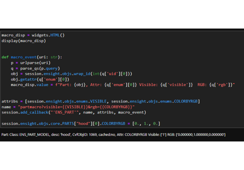

Examples#
These examples show how the PyEnSight interfaces work and demonstrate postprocessing workflows leveraging these interfaces.
Basic examples#
These basic examples use the PyEnSight API to produce simple scenes.


Surface Restricted Traces and Line Integral Convolution
Surface Restricted Traces and Line Integral Convolution


Intermediate examples#
These intermediate examples use the PyEnSight API for more complex workflows that employ calculator functions, queries, viewports, and annotations.


Advanced examples#
These advanced examples use more sophisticated features of the PyEnSight API, including events, parallelism, direct data access, and techniques that improve performance.

Asynchronous event support